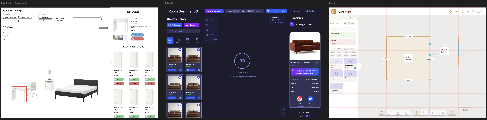
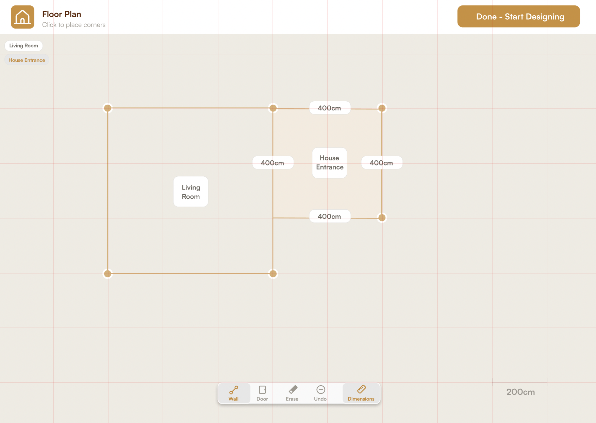
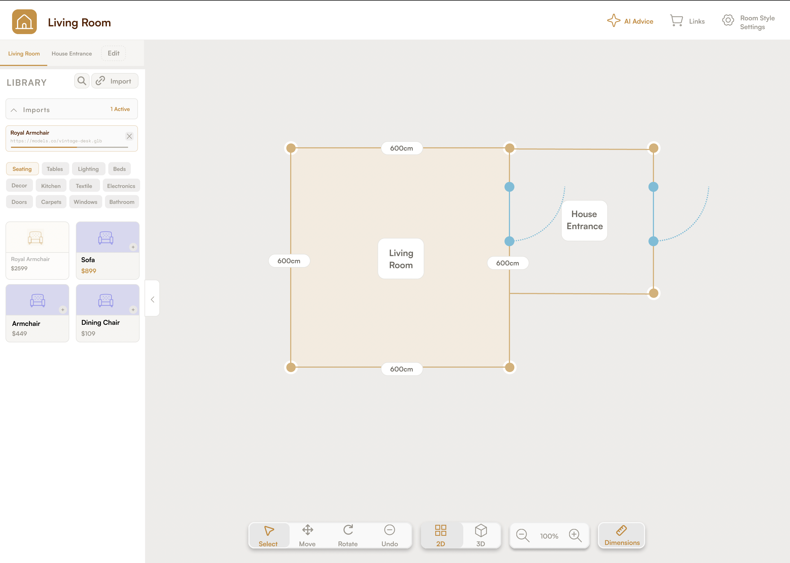
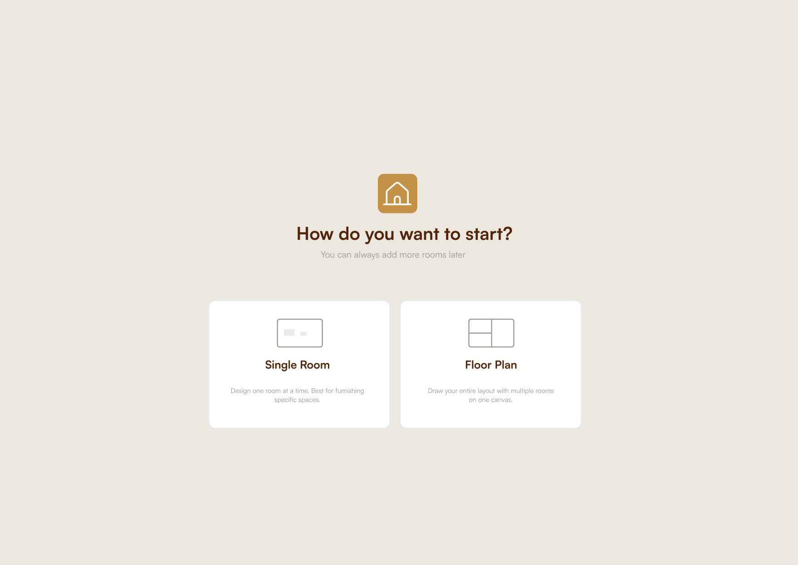
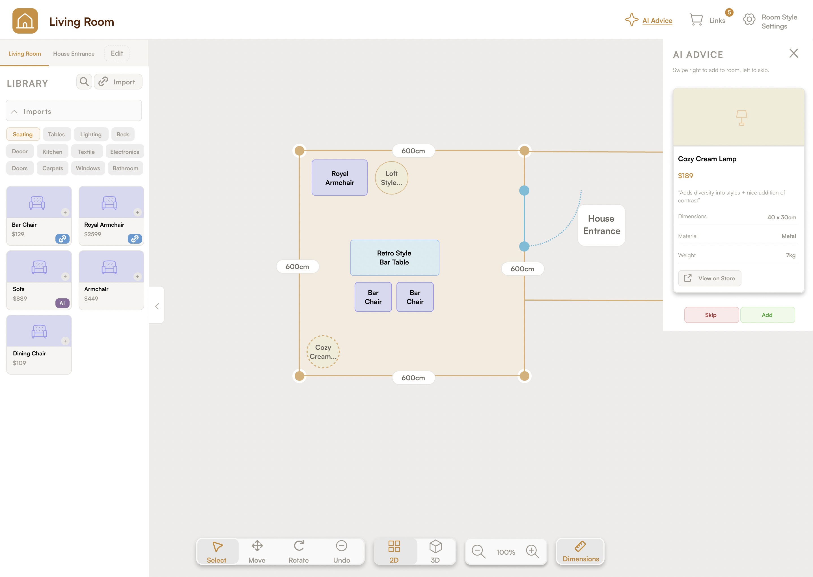
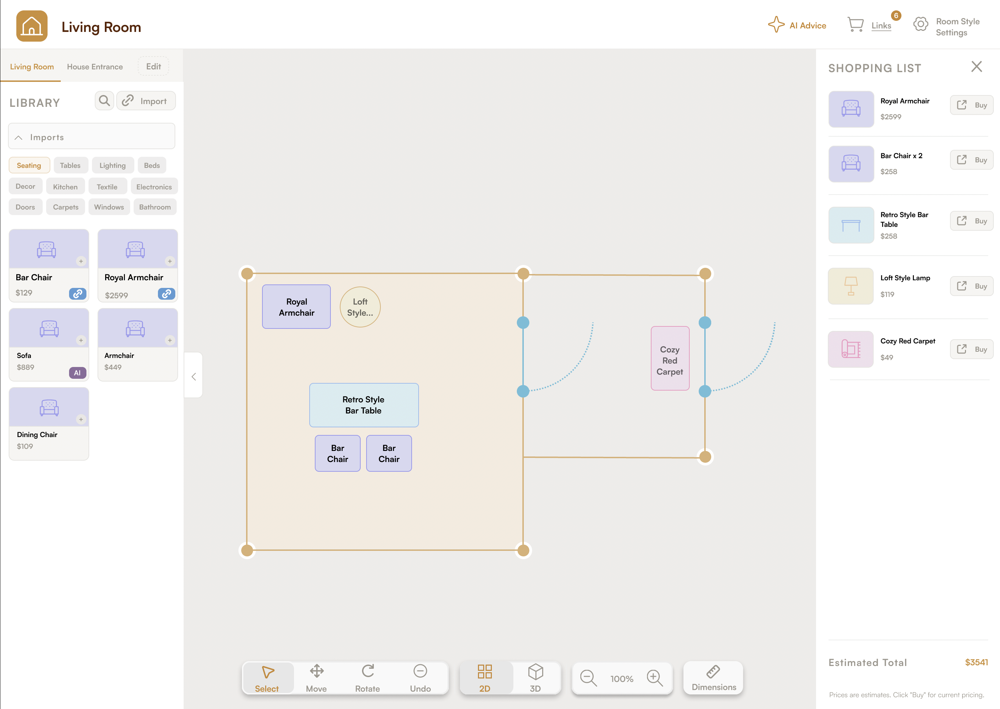
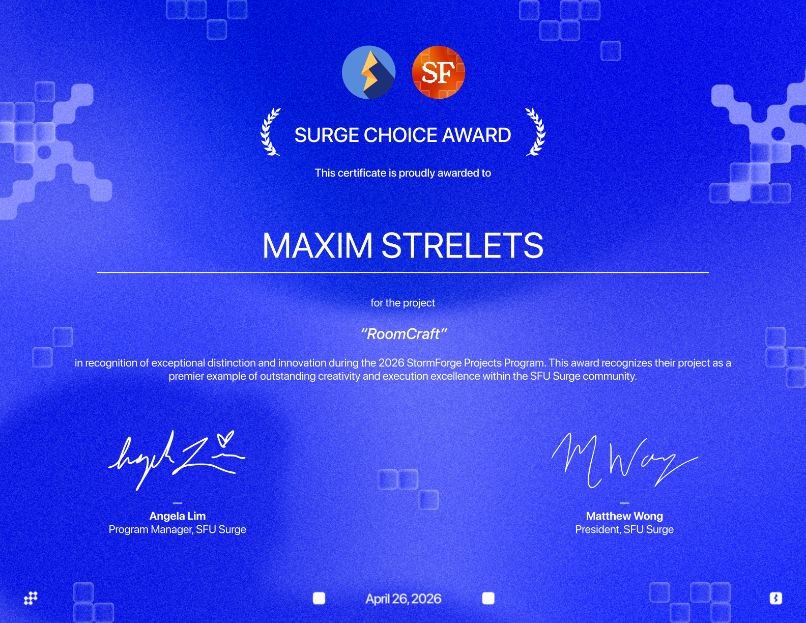

RoomCraft — 3D Room Planning Tool
Intro
RoomCraft is a web-based 2D and 3D room planning tool built during SFU Surge's StormForge 2026 program. It lets users sketch or trace a room, import real furniture products, preview them in 3D, and experiment with AI-assisted layout optimization. The project won the Surge Choice Award for its approach to making interior design more accessible and intuitive.
Problem & Context
Designing a room layout is a time-consuming process. Most people struggle to visualize how furniture will fit and look in their space before committing to purchases. Existing tools are often complex, aimed at professionals, or lack the ability to work with real products.
RoomCraft was built to bridge that gap, giving everyday users a way to quickly sketch their room, drop in real furniture from retailers like IKEA, and see the result in 3D, all within the browser.
Design Process & Challenges
My focus was on designing the interface that ties together a complex set of features: 2D room drawing, 3D preview, a product catalog, and AI tools, into a workflow that feels approachable rather than overwhelming. The challenge was keeping the interface clean while still giving users access to powerful functionality, without burying that functionality so deeply that it became hard to find.

The interface went through several rounds of visual and layout refinement over the course of the project, from early concept to final design
To do this, I grouped core actions like Select, Move, Rotate, and switching between 2D and 3D views into a single toolbar, so the main canvas could stay uncluttered. The product catalog, library, and import tools live in a side panel, and contextual controls such as wall dimensions, room settings, and item properties only appear when they are relevant, rather than competing for attention all the time.
A real challenge was fitting all of these functions together without overwhelming the user or making the interface cognitively heavy. My second iteration struggled with this: too many elements competed for attention at once. I had to rethink which functions could be tucked into menus versus surfaced directly, how to group related actions based on how someone would actually move through the tool, and how to visually distinguish default catalogue items from furniture a user imported themselves. I also had to design for edge cases, like how the interface should communicate when an import failed to load, so the experience stayed clear even when something went wrong.
To check whether the interface actually made sense to someone outside the project, I showed an interactive Figma prototype to people unfamiliar with RoomCraft and watched how they tried to use it without any guidance from me. The sessions revealed that they did not know where to start, some buttons were unclear, and certain furniture categories were hard to find. The interface did not yet feel like a coherent system, with functions that felt scattered rather than organized around how someone would actually use the tool. That feedback directly shaped the toolbar and panel structure described above, as well as a shift toward a calmer, lighter visual style, since testers also responded poorly to the darker, more dramatic look of the early concept.
I designed the bottom toolbar to group core actions: Select, Move, Rotate, 2D, and 3D views in a single bar, keeping the main canvas together uncluttered. The product catalog, library, and Import are located in the side panel, and contextual controls like wall dimensions, room settings and item properties appear only when relevant.

These screenshots reflect my high-fidelity Figma designs. Within the hackathon timeline, the development team fully implemented the core layout and functionality, though some visual styling differs in the final build

Key Features
The 2D editor supports drawing walls, adjusting corners, calibrating dimensions, and tracing from an uploaded floor plan image using AI. Users can import furniture by pasting a product URL, which pulls the 3D model and metadata automatically.
The 3D editor renders the room with walls, floors, and placed furniture in real time. Users can move, rotate, and arrange items with collision detection. My original design for the AI feature focused on a basic product suggestion interface. During development, the team expanded this into a broader set of AI tools, including Themeify for style-based room generation and a genetic algorithm for layout optimization. The video demo showcases the full range of these features as implemented.



My Contribution
As the UI/UX designer on the team, I was responsible for the overall interface design and user experience. This included designing the layout and visual hierarchy of the editor, the toolbar and panel system, modal dialogs for product import and AI features, and ensuring the transition between 2D and 3D views felt seamless.
I created high-fidelity mockups in Figma and worked closely with the development team to ensure the designs translated accurately into the final application. The project was built with React, Three.js, and FastAPI on the backend, with AI features powered by Google Gemini through Vertex AI.
Reflection
RoomCraft was a significant step in my growth as a designer. Working within a team on a technically complex product pushed me to think carefully about how to simplify advanced functionality without hiding it. Designing for a 3D tool in the browser presented unique challenges around spatial controls, mode switching, and information density.
Winning the Surge Choice Award was a meaningful validation that thoughtful UI/UX design can make a real difference in how people experience a product, even in a technically driven project. If I were to continue working on RoomCraft, I would focus on user testing to refine the onboarding experience and explore mobile responsiveness for the editor.
